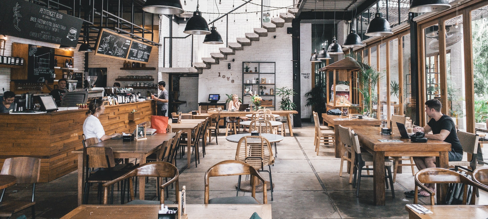
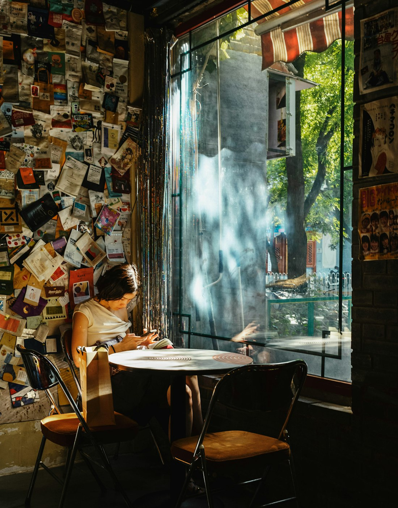
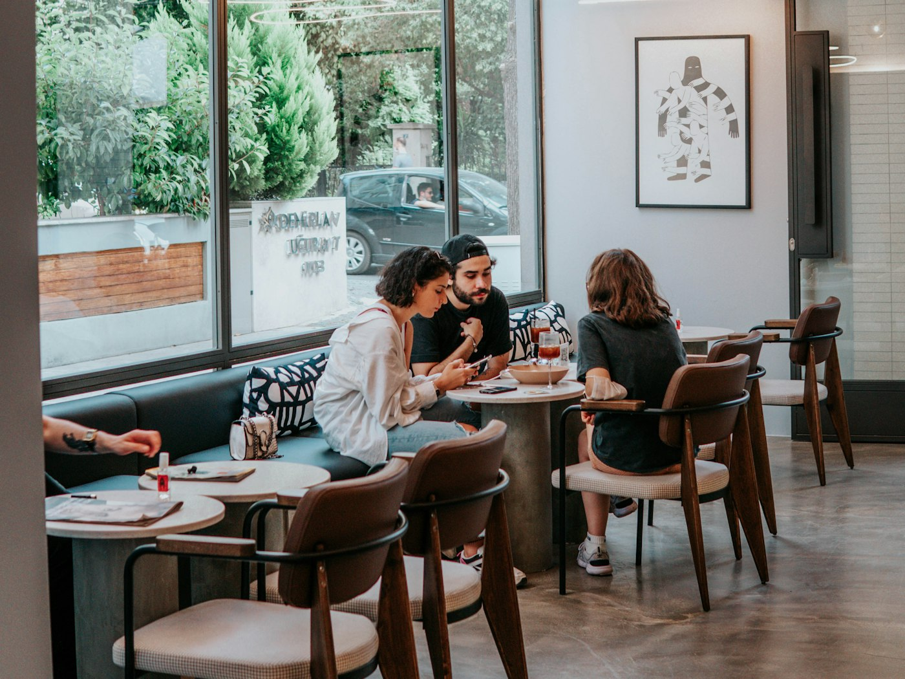
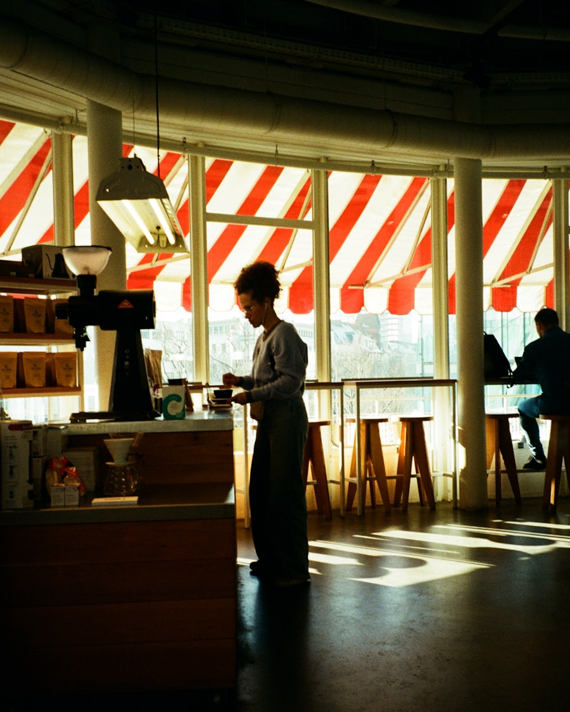
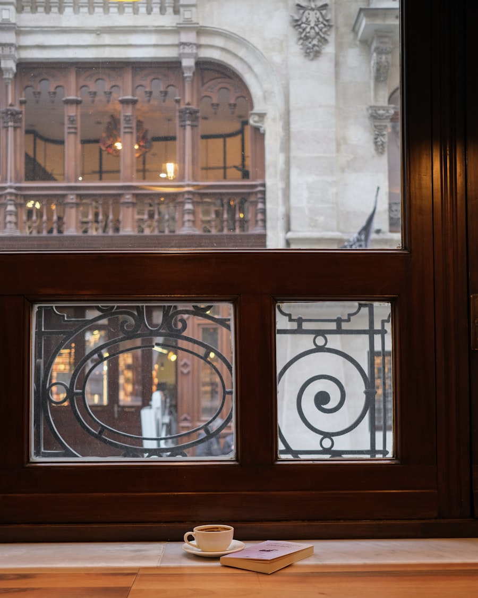
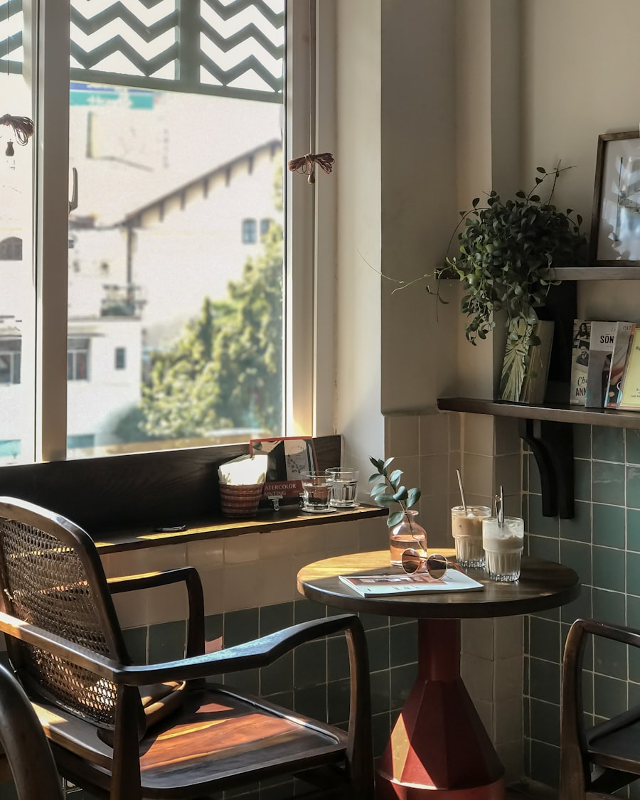
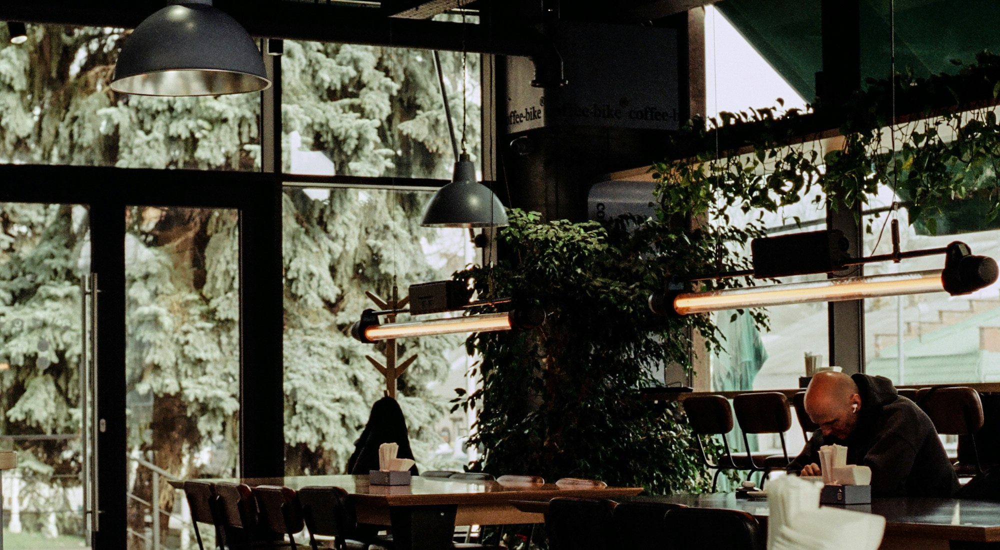
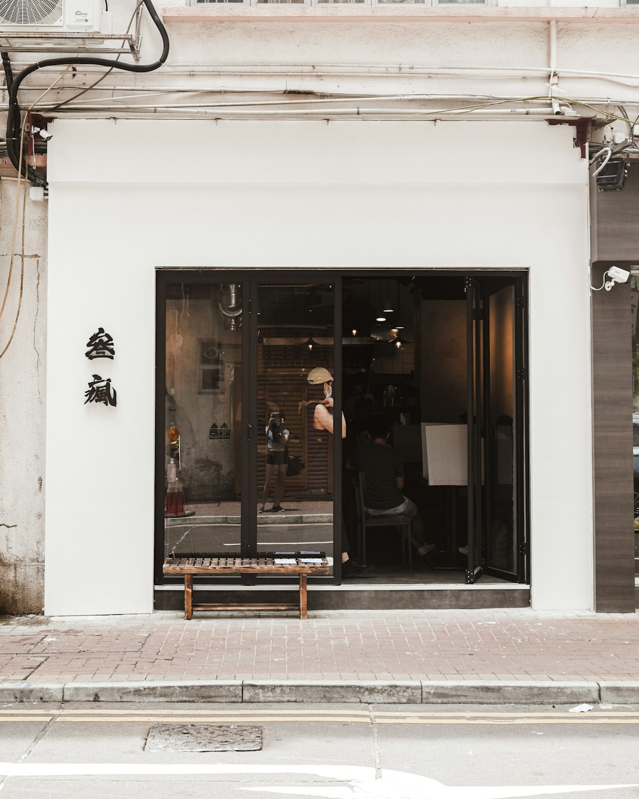

A coffee shop for the thing you’re still building.
You’re getting a company off the ground, or turning a class project into something real, or standing up a program at a nonprofit, or carrying a project at work that nobody assigned you. That kind of work needs two things on the same afternoon: a few uninterrupted hours, and one person who will look at what you’ve got and tell you what they actually think. Most places give you one or the other. This room is built for both.


01
Quiet on purpose
You can take a three-hour stretch here and have nothing asked of you. No music engineered to move you along, no table-turning, no line noise at your elbow. Come in with a hard problem and get it out of your head and onto the page.

02
And then look up
The person two tables over is also mid-build. Ours is a room where saying “what are you working on” is normal, not an intrusion, and where staff who’ve heard both sides of a problem will point you at each other. Some afternoons you’ll work straight through. Some afternoons a fifteen-minute conversation changes what you do next.
The room itself
Built for a long sitting, and for the chance you’ll want company partway through.
Two rooms, thirty-one seats, and a counter that has heard most versions of the problem you walked in with.




Who this isn’t for
- If you want coffee in ninety seconds, the corner will beat us.
- If you’re hunting for the cheapest seat in the neighborhood, that isn’t this one.
- And if you want to sit all day in headphones and speak to nobody, you’ll find us in your way.
We’d rather lose those three customers than dilute the room for the people we built it for.
What you’re paying for
Our prices run about 15% above the chains.
You’re paying for a room kept calm on purpose, and for who else is sitting in it.
Drip $4.25 · Cortado $5.00 · Refills on drip are free, all day, no matter how long the day runs.
Walk out with more momentum on your idea than you walked in with.
Harrison Ave at Waltham Street, South End, Boston
Open 7am–7pm, Monday through Saturday
Come with the messy version. That’s the one worth talking about.

Harrison & Waltham · open at seven